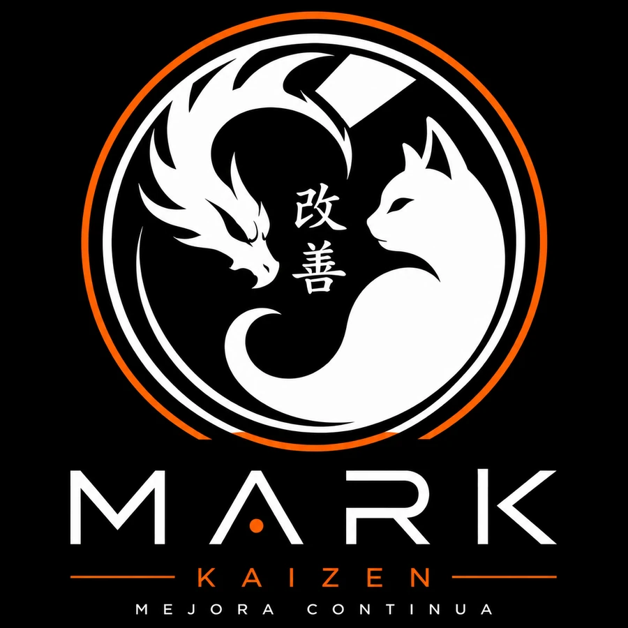

MARK
KAIZEN
MEJORA CONTINUA
“Creatividad que evoluciona constantemente.”
Manual de identidad de marcaEsencia de marca
Quién es MARK KAIZEN
Una marca personal de marketing que une estrategia, creatividad, cultura visual japonesa y mejora continua.
Convertir ideas en marcas y contenidos con identidad, estrategia y resultados.
Construir una marca personal reconocible por su estilo creativo, su pensamiento estratégico y su capacidad de evolución.
Crea soluciones originales, experimenta y busca mejorar continuamente.
Significado del símbolo
Cuatro ideas en un círculo
Sistema visual
Color
Toca un color para copiar su código.
Regla: el naranja funciona como acento, no como fondo dominante. La base es negro + blanco + naranja; vino y dorado solo en detalles.
Energía, acción, creatividad y diferenciación.
Autoridad, sofisticación y tecnología.
Claridad, simplicidad y equilibrio.
Logotipo
Versiones y uso

Deja libre alrededor del logo, como mínimo, el ancho del trazo naranja exterior (x).
Tipografía
Dos familias, nada más
Sans-serif geométrica, equivalente a Marigny Bold.
Aa
ABCDEFGHIJKLMNÑOPQRSTUVWXYZ 0123456789
Limpia y legible en pantalla. Alternativa: Montserrat.
Aa
abcdefghijklmnñopqrstuvwxyz 0123456789
El lettering del logo es personalizado: no se reemplaza ni se cambian sus proporciones. Máximo 2 familias por pieza.
Voz y comunicación
Directa, segura y creativa
Hablar como alguien que entiende marketing y también sabe comunicar visualmente.
No publiques por publicar.
Una idea también necesita estrategia.
Creatividad con propósito.
Mejora. Prueba. Aprende. Repite.
Movimiento
Cómo se mueve la marca
Movimiento moderado y limpio: zooms suaves, trazos que se dibujan y destellos breves. Tecnológico y premium, nunca gamer ni infantil. Toca “Repetir” para ver cada uno.
1.2 s · ease-kaizen1.2 s · ease-kaizen0.8 s · +0.1 s por bloque0.7 s · solo en hovercubic-bezier(.2, .8, .2, 1)
Arranca rápido y llega suave: se siente decidido, no brusco.
Redes sociales
TikTok
Marketing · Creatividad · Estrategia Construyendo marcas que evolucionan. 改善 KAIZEN — Mejora continua.

Fotografía y audiovisual
Estudio creativo japonés contemporáneo

Fondo oscuro, luz lateral, detalle naranjaZoom suave · movimiento moderado
- Encuadres limpios y fondos oscuros.
- Luces laterales con detalles naranjas.
- Edición dinámica con movimiento moderado.
- Transiciones: cortes limpios, zooms suaves, flashes breves y motion graphics minimalistas.
- Música: electrónica, lo-fi, future bass o instrumentales japonesas modernas.
- Evitar la apariencia gamer o infantil.
Aplicaciones
La marca en cada pieza
con propósito.01 / 12
Manifiesto
MARK KAIZEN no busca ser perfecto. Busca evolucionar. Combina estrategia con creatividad, análisis con intuición y disciplina con experimentación. Cada proyecto es una oportunidad para aprender, mejorar y construir algo más fuerte que antes.
改善 — KAIZEN · MEJORA CONTINUA.